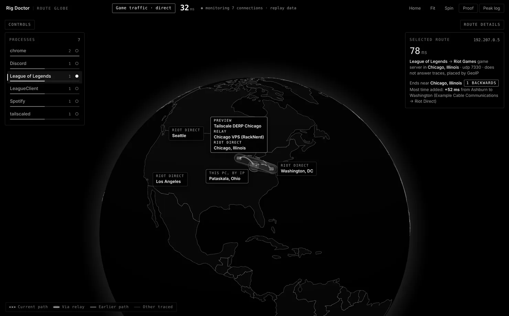

Measured in-game gain, or your month is refunded.
Rig Doctor is a relay for League of Legends NA that has to prove it beats your direct connection. It reads the ping League recorded in your own matches, on both routes, and Auto picks the relay only when it measured 10 ms faster. Paid plans aren’t open yet: the app is free, and relay access is by invite.
For 64-bit Windows 10 or 11, and Macs with Apple silicon. Free and open source.

How it decides
-
Play with the app open
Play some matches with the relay on and some with it off. After each one, Rig Doctor reads League’s own network log, which records the ping your game saw every 10 seconds.
-
Compare the routes
It keeps your last 10 matches on each route, direct and relay. A route’s score is its median ping, plus 3 ms for every 1% of packets lost.
-
Let Auto pick
Once both routes have at least 3 matches, Auto picks the relay only if it scores 10 ms or more better. Otherwise it stays direct. Auto never switches from ready check to the end of a match.
The refund rule
A month with League matches is judged on those matches alone: the relay’s median ping against direct, with the same 3-match minimum and 10 ms bar Auto uses.
| Your matches that month | Under paid plans |
|---|---|
| 3 or more on each route, relay 10 ms or more faster | You pay |
| 3 or more on each route, relay less than 10 ms faster or slower | Refunded automatically |
| Fewer than 3 on either route | Refunded automatically |
Nothing is charged today. This is the rule paid plans will use, and the app already shows each month’s verdict in Proof. A month with no League matches is judged on the app’s Proof runs instead, against the same 10 ms bar.
What it won’t do
- It won’t lower everyone’s ping. Whether the relay helps depends on how your internet provider reaches Riot. On the developer’s own connection both routes measured about 30 ms in matches: a tie.
- It won’t route anything but Riot traffic. Browsing, streaming and other apps stay on your normal connection. Riot’s own client, chat and patch downloads can use the relay too.
- It won’t help outside League NA yet. The relay sits in Chicago, where League’s NA game servers are, and the match proof reads League’s own log.
Before you install
Windows
- The installer isn’t code-signed yet, so SmartScreen may stop it. Choose More info, then Run anyway.
- The relay runs on WireGuard. Install it from wireguard.com first.
- Setting up the relay asks for administrator approval.
Mac
- The app isn’t signed or notarized by Apple yet, so macOS blocks the first open. After you drag it to Applications, run this once in Terminal:
xattr -cr "/Applications/Rig Doctor Globe.app" - The relay needs WireGuard tools from Homebrew:
brew install wireguard-tools - Until the signed app ships, macOS asks for your password each time you turn the relay on or off.
- Match proof hasn’t been tested on a real Mac yet.
Relay access is by invite while a small group tests it. Without an invite, the globe and route tracing work as usual.